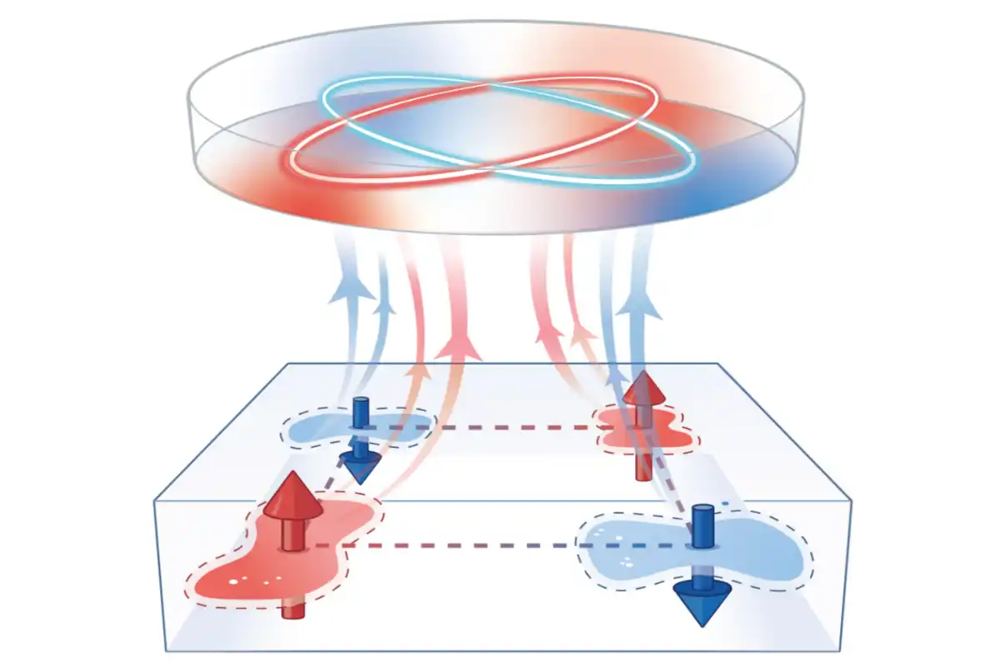

Altermagnetic Proximity Effect
We propose the altermagnetic proximity effect, whereby the hallmark momentum-dependent spin splitting of an altermagnet is transferred across an interface into adjacent nonmagnetic layers, enabling valley-dependent spin splitting and topological superconductivity with Majorana modes in versatile heterostructures. Phys. Rev. Lett. 2026, Editors’ Suggestion.